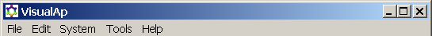

[Main Index]
Commands

File Menu
New:
creates a new system. Accelerator: Ctrl+N
Open:
open an existing system (.vas is the filetype for VisualAp systems).
Accelerator: Ctrl+O
Save:
save the current system (noname.vas in case no filename has been
defined). Accelerator: Ctrl+S
Save
as: save the current system using a specified file name
Print:
print the current system. Accelerator: Ctrl+P
Quit:
quits VisualAp
Edit menu
Properties:
displays the selected component properties (the same command is
available by right-clicking the mouse over the component in the
workspace panel)
Cut:
delete the selected component (the same command is available by
right-clicking the mouse over the component in the workspace panel).
Accelerator: Ctrl+X
Unbind:
removes all the edges connected to the selected component (the same
command is available by right-clicking the mouse over the component
in the workspace panel)
Copy:
copy the selected component (the same command is available by
right-clicking the mouse over the component in the workspace panel).
Accelerator: Ctrl+C
Paste:
insert a copy of the clipboard in the workspace panel (the same
command is available by right-clicking the mouse in a free area of
the workspace panel). Accelerator: Ctrl+V
Insert:
insert a new component in the workspace panel (the same command is
available by right-clicking the mouse in a free area of the workspace
panel)
System menu
Check:
performs a check of the correctness of the current system
Run:
run process simulation of the current system
Tools menu
Preferences:
Set preferences
Help menu
Help Topics: display the Help window. Accelerator: F1
Help on beans: display the help information related to available beans
Check Version: checks for new version. If needed it opens the download page
About VisualAp: Displays the version number of VisualAp
Main index